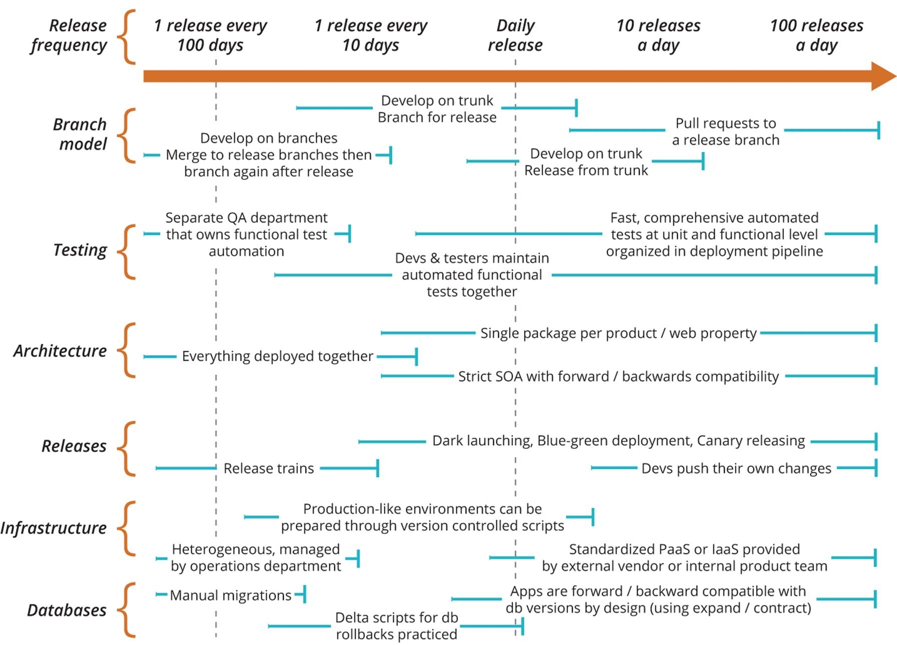
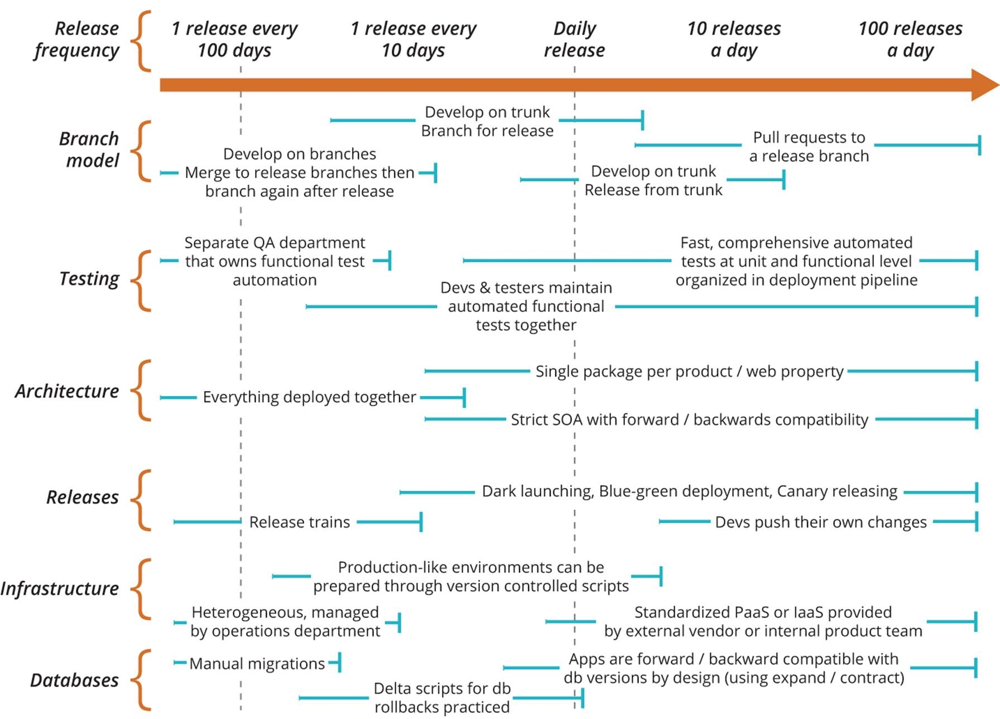

石雪峰老师课程学习心得

软件发布的频率从 100 天 1 次进化到 1 天 100 次的时候，分支策略、测试能力、软件架构、发布策略、基础设施能力，以及数据库能力都要进行相应的改动。比如分支策略要从长线分支变成基于特性的主干开发模式，而架构也要从大的单体应用，不断解耦和服务化。在实际应用中，企业涉及的领域甚至更多，因为这些仅仅是技术层面的问题，而组织文化方面也不可或缺。

软件发布的频率从 100 天 1 次进化到 1 天 100 次的时候，分支策略、测试能力、软件架构、发布策略、基础设施能力，以及数据库能力都要进行相应的改动。比如分支策略要从长线分支变成基于特性的主干开发模式，而架构也要从大的单体应用，不断解耦和服务化。在实际应用中，企业涉及的领域甚至更多，因为这些仅仅是技术层面的问题，而组织文化方面也不可或缺。